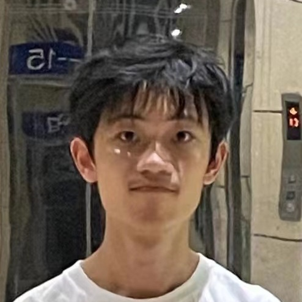

EN: I am Siyuan Chen who is currently (Aug.21, 2023) an undergraduate student in Fudan University.
My curriculum vitae:
Feb.23, 2003: Born in Hangzhou, China.
Sept.6, 2021: Entering Fudan University and majoring in Mathematics.
My events:
May 22, 2023: A prize for Yau competition in geometry and topology.
Aug.14, 2023: Attending summer school of BIMSA of IWoAT.
My research interest: Homotopy theory, Algebraic Topology.
Please visit https://www.overleaf.com/read/bhhsfgczgmnv for more information about my works.
CH: 我是陈思源，现（2023年8月21日）复旦大学本科在读。
我的简历：
2003年2月23日: 生于中国杭州市。
2021年9月6日：进入复旦大学，专业为数学。
我的事件：
2023年5月22日：获得丘成桐数学竞赛几何与拓扑优胜奖。
2023年8月14日：在BIMSA参加IWoAT暑期学校。
我的研究兴趣：同伦论、代数拓扑。
请访问https://www.overleaf.com/read/bhhsfgczgmnv来了解更多关于我的作品的信息。
